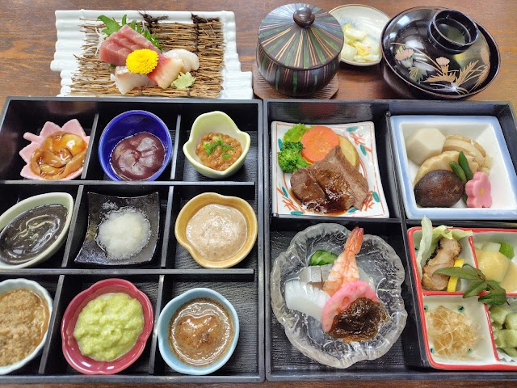
| 営業時間 | 火・水・木・金・土・日 11:00〜14:00 |
|---|---|
| 定休日 | 月曜 |
| 住所 | 岩手県一関市上大槻街３−５３ |
| 予約 | 可 — ☎ 0191-23-4536 ／ 公式サイト |
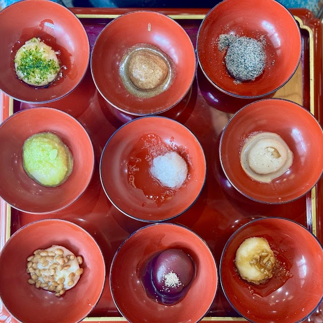
| 営業時間 | 月・木・金・土・日 11:00〜15:00 |
|---|---|
| 定休日 | 火・水曜 |
| 住所 | 岩手県一関市田村町５−４２ |
| 予約 | 可 — ☎ 0191-21-5566 ／ 公式サイト |
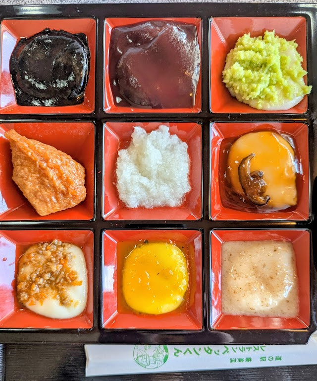
| 営業時間 | 月・火・水・木・金・土・日 10:30〜16:00 |
|---|---|
| 定休日 | なし(要最終確認) |
| 住所 | 岩手県一関市厳美町沖野々−２２０−１ |
| 予約 | 要確認 — ☎ 0191-29-2000 ／ 公式サイト |
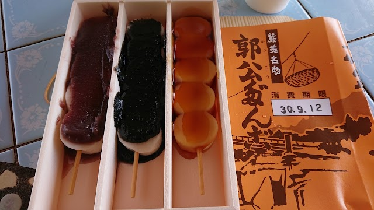
| 営業時間 | 月・火・木・金・土・日 9:30〜15:00 |
|---|---|
| 定休日 | 水曜 |
| 住所 | 岩手県一関市厳美町滝ノ上２１１ |
| 予約 | 要確認 — ☎ 0191-29-2031 ／ 公式サイト |
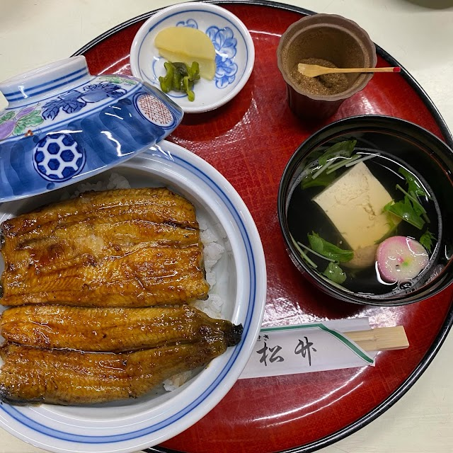
| 営業時間 | 火・水・木・金・土・日 11:00〜14:00, 17:00〜19:00 |
|---|---|
| 定休日 | 月曜 |
| 住所 | 岩手県一関市上大槻街２−１ |
| 予約 | 可 — ☎ 0191-23-3318 ／ 公式サイト |
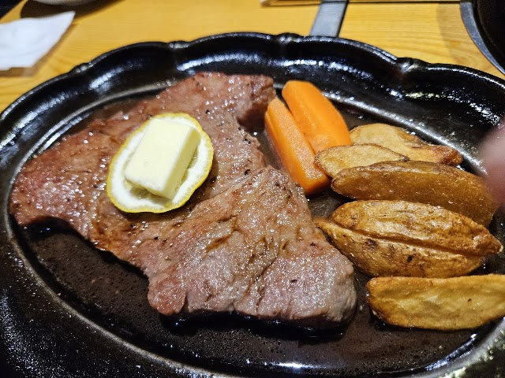
| 営業時間 | 月・水・木・金・土・日 11:30〜21:00 |
|---|---|
| 定休日 | 火曜 |
| 住所 | 岩手県一関市駅前４２ |
| 予約 | 可 — ☎ 0191-23-4026 ／ 公式サイト |
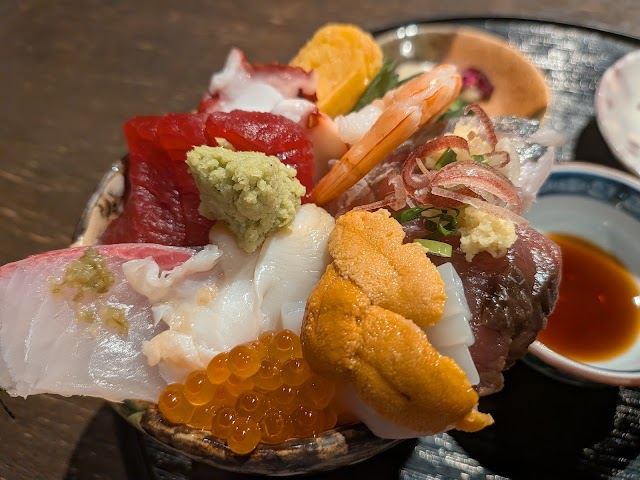
| 営業時間 | 月・金・土・日 12:00〜14:00, 17:00〜20:00 ／ 木 17:00〜20:00 |
|---|---|
| 定休日 | 火・水曜 |
| 住所 | 岩手県一関市大町３−４６ |
| 予約 | 可 — ☎ 0191-23-2504 |
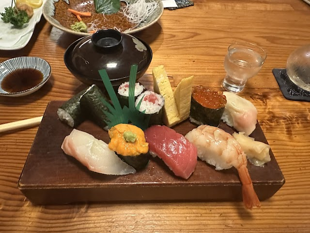
| 営業時間 | 月・火・水・木・金・土・日 11:30〜13:30, 17:30〜21:00 |
|---|---|
| 定休日 | なし(要最終確認) |
| 住所 | 岩手県一関市新大町３０ |
| 予約 | 可 — ☎ 0191-23-2556 ／ 公式サイト |
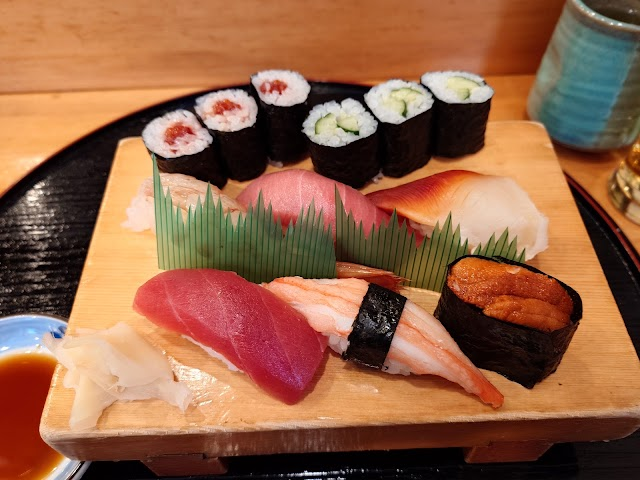
| 営業時間 | 月・火・木・金・土・日 11:30〜14:00, 17:00〜21:00 |
|---|---|
| 定休日 | 水曜 |
| 住所 | 岩手県一関市東地主町６６−１ |
| 予約 | 可 — ☎ 0191-23-2386 |
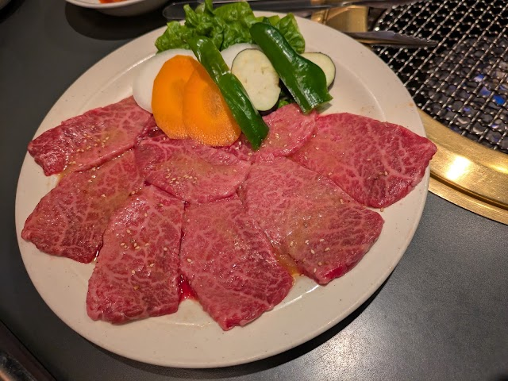
| 営業時間 | 水・木・金・土・日 11:30〜14:00, 17:00〜22:00 |
|---|---|
| 定休日 | 月・火曜 |
| 住所 | 岩手県一関市大手町７−４７ |
| 予約 | 可 — ☎ 0191-23-6034 |
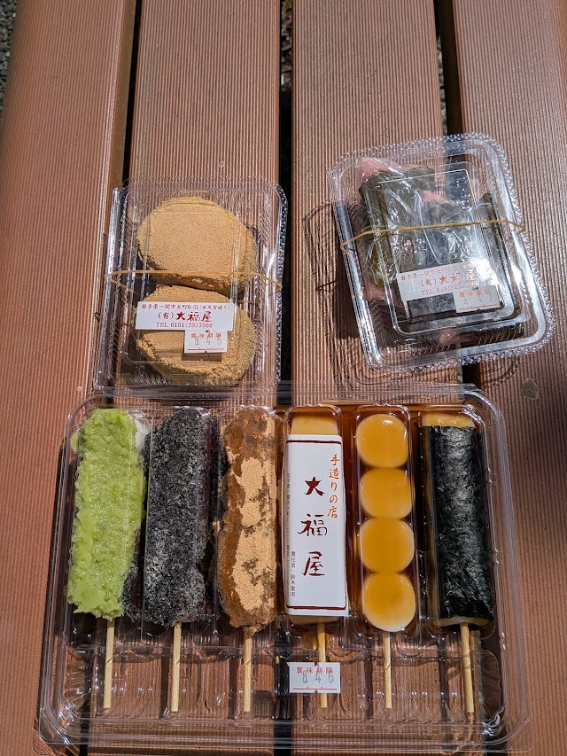
| 営業時間 | 月・火・水・木・金・土・日 9:30〜16:00 |
|---|---|
| 定休日 | なし(要最終確認) |
| 住所 | 岩手県一関市大町６−３１ |
| 予約 | 要確認 — ☎ 0191-23-3566 ／ 公式サイト |
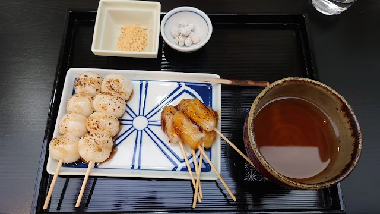
| 営業時間 | 月・火・水・木・金・土・日 9:00〜17:00 |
|---|---|
| 定休日 | なし(要最終確認) |
| 住所 | 岩手県一関市地主町３−３６ |
| 予約 | 要確認 — ☎ 0191-23-5008 ／ 公式サイト |
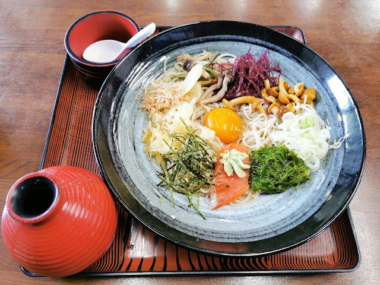
| 営業時間 | 月・火・金・土・日 11:30〜14:00 |
|---|---|
| 定休日 | 水・木曜 |
| 住所 | 岩手県一関市東山町長坂町町３７６ |
| 予約 | 可 — ☎ 0191-47-3355 ／ 公式サイト |
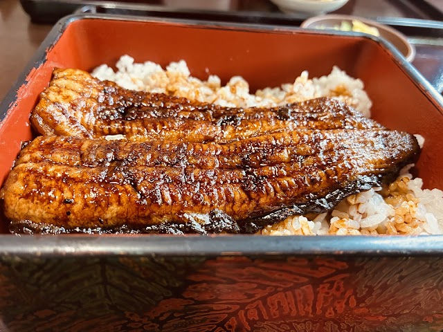
| 営業時間 | 月・火・水・木・金・土・日 11:30〜14:00, 17:00〜20:00 |
|---|---|
| 定休日 | なし(要最終確認) |
| 住所 | 岩手県一関市田村町８−８ |
| 予約 | 可 — ☎ 0191-23-4900 |
| 営業時間 | 月・水・木・金・土・日 9:00〜17:00 |
|---|---|
| 定休日 | 火曜 |
| 住所 | 岩手県一関市厳美町若神子２４１−２ |
| 予約 | 要確認 — ☎ 0191-33-5022 ／ 公式サイト |
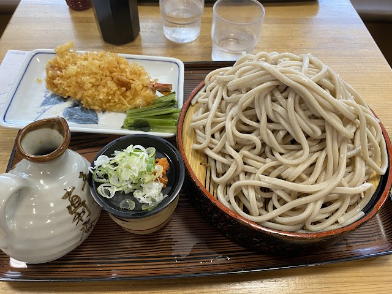
| 営業時間 | 土・日 11:45〜15:00 |
|---|---|
| 定休日 | 月・火・水・木・金曜 |
| 住所 | 岩手県一関市東地主町７２ |
| 予約 | 要確認 — ☎ 0191-23-5124 |
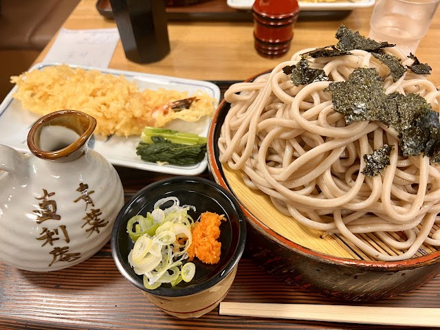
| 営業時間 | 月・火・水・木・金・土 11:00〜15:00 |
|---|---|
| 定休日 | 日曜 |
| 住所 | 岩手県一関市青葉２丁目９−１１ |
| 予約 | 要確認 — ☎ 0191-23-2291 |
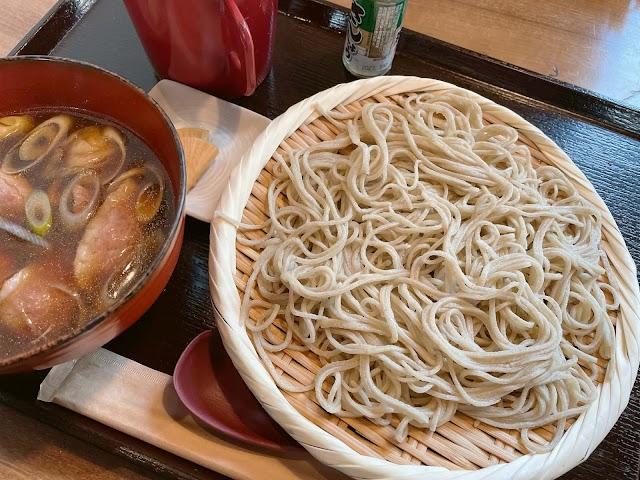
| 営業時間 | 火・水・木・土 11:30〜15:00 ／ 金・日 11:00〜15:00 |
|---|---|
| 定休日 | 月曜 |
| 住所 | 岩手県一関市藤沢町増沢九十村１２７−１ |
| 予約 | 要確認 — ☎ 0191-34-9512 ／ 公式サイト |
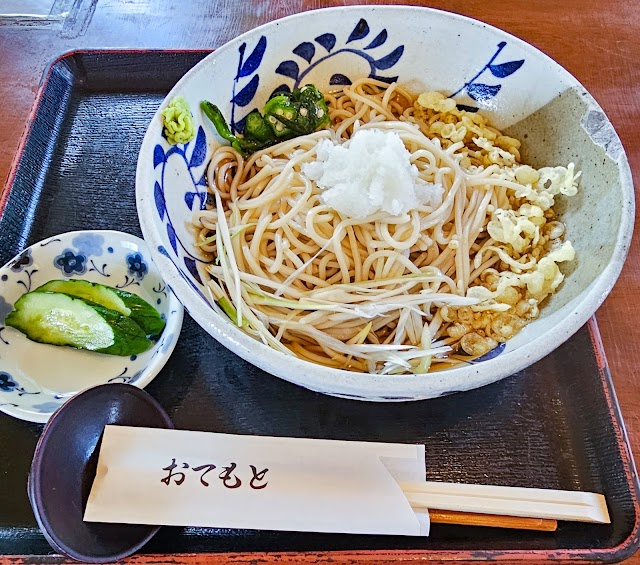
| 営業時間 | 月・火・水・金 11:00〜14:00 ／ 土・日 11:00〜15:00 |
|---|---|
| 定休日 | 木曜 |
| 住所 | 岩手県一関市厳美町入道１７８−４ |
| 予約 | 要確認 — ☎ 0191-33-5588 |
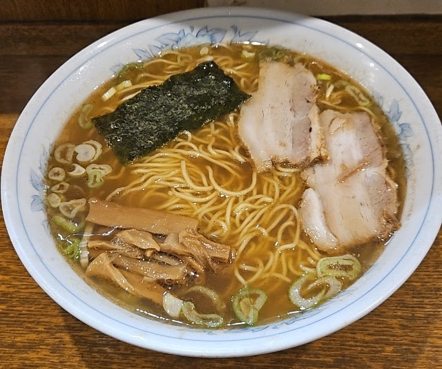
| 営業時間 | 月・火・水・木・金・土 11:30〜14:45, 17:45〜0:30 |
|---|---|
| 定休日 | 日曜 |
| 住所 | 岩手県一関市上大槻街２−３４ マルチョウビル １Ｆ |
| 予約 | 可 — ☎ 0191-23-2001 ／ 公式サイト |
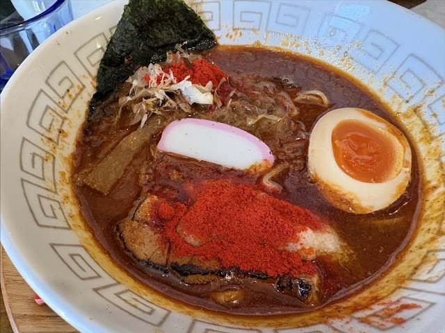
| 営業時間 | 月・火・水・木・土・日 11:30〜15:00, 17:30〜21:00 |
|---|---|
| 定休日 | 金曜 |
| 住所 | 岩手県一関市三関神田１７５−１ |
| 予約 | 要確認 — ☎ 0191-23-2727 ／ 公式サイト |
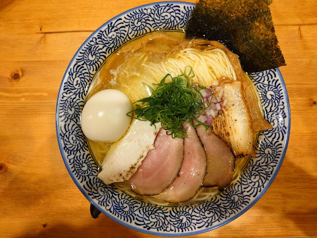
| 営業時間 | 月・木・金・土・日 11:00〜14:00, 17:00〜20:30 |
|---|---|
| 定休日 | 火・水曜 |
| 住所 | 岩手県一関市千厩町千厩古ケ口８８ |
| 予約 | 要確認 — ☎ 0191-48-5020 ／ 公式サイト |
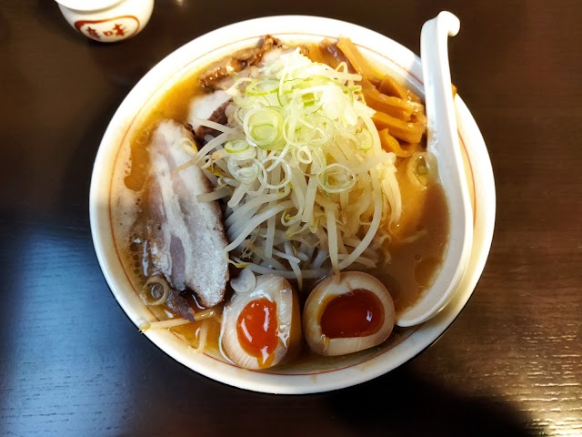
| 営業時間 | 月・火・金・土・日 11:00〜14:30, 17:30〜19:30 ／ 水 11:00〜14:30 |
|---|---|
| 定休日 | 木曜 |
| 住所 | 岩手県一関市山目十二神３−４ |
| 予約 | 要確認 — ☎ 0191-34-6606 ／ 公式サイト |
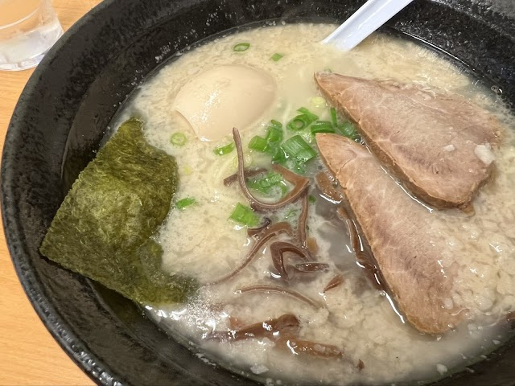
| 営業時間 | 火・水・木・金 11:30〜15:00, 17:00〜21:00 ／ 土・日 11:30〜16:00, 17:00〜21:00 |
|---|---|
| 定休日 | 月曜 |
| 住所 | 岩手県一関市狐禅寺川口２１７−１１ |
| 予約 | 要確認 |
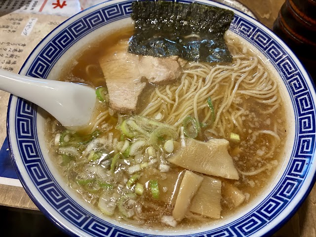
| 営業時間 | 月・火・水・木・金・土・日 18:00〜2:30 |
|---|---|
| 定休日 | なし(要最終確認) |
| 住所 | 岩手県一関市大町１−４５ |
| 予約 | 要確認 — ☎ 0191-21-5122 |
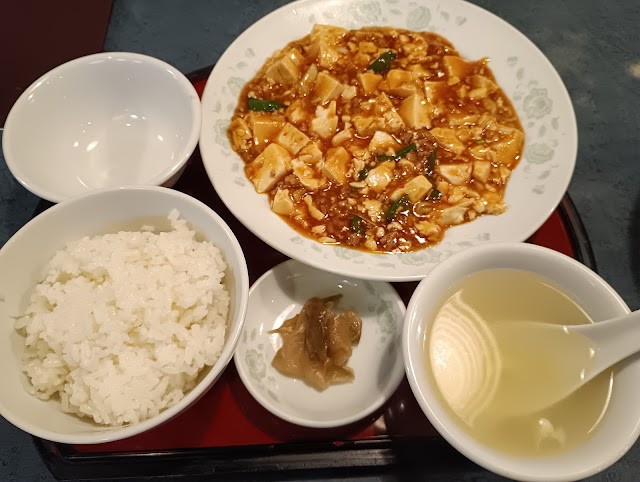
| 営業時間 | 火・水・木・金・土・日 11:30〜14:00, 17:00〜20:00 |
|---|---|
| 定休日 | 月曜 |
| 住所 | 岩手県一関市散田３４−１ |
| 予約 | 可 — ☎ 0191-23-7899 |
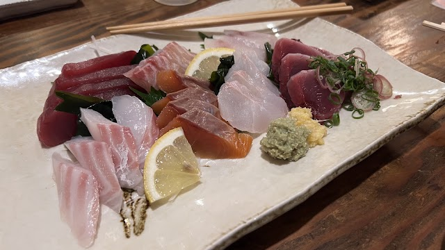
| 営業時間 | 月・火・木・金・土 17:00〜22:00 |
|---|---|
| 定休日 | 水・日曜 |
| 住所 | 岩手県一関市大町６−２０ |
| 予約 | 可 — ☎ 0191-23-5744 |
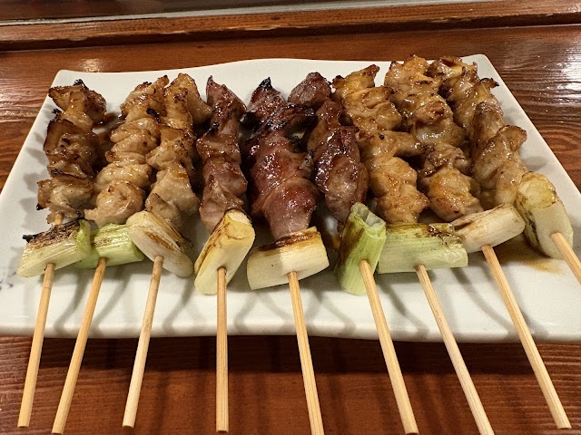
| 営業時間 | 月・火・水・木・金・土 17:00〜22:00 |
|---|---|
| 定休日 | 日曜 |
| 住所 | 岩手県一関市大町４−１１ |
| 予約 | 可 — ☎ 0191-23-3658 |
| 営業時間 | 18:00〜24:00 |
|---|---|
| 定休日 | 日曜 |
| 住所 | 岩手県一関市大町３−１ |
| 予約 | 要確認 |
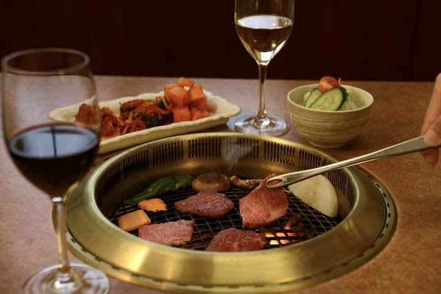
| 営業時間 | 月・火・金・土・日 11:00〜15:00, 17:00〜21:00 |
|---|---|
| 定休日 | 水・木曜 |
| 住所 | 岩手県一関市川崎町薄衣法道地２１−１６ |
| 予約 | 可 — ☎ 0191-48-4129 ／ 公式サイト |
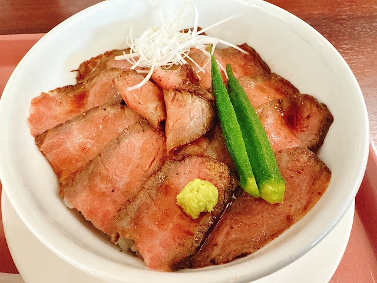
| 営業時間 | 月・火・水・木・金・土 9:00〜19:00 |
|---|---|
| 定休日 | 日曜 |
| 住所 | 岩手県一関市柳町２−５ |
| 予約 | 可 — ☎ 0191-26-7300 |
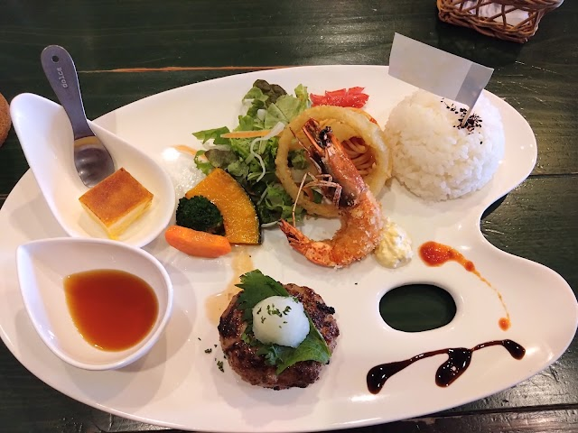
| 営業時間 | 火・水・木・金・土・日 11:30〜15:00, 17:30〜20:00 |
|---|---|
| 定休日 | 月曜 |
| 住所 | 岩手県一関市宇南１−５ |
| 予約 | 可 — ☎ 050-1183-3954 ／ 公式サイト |
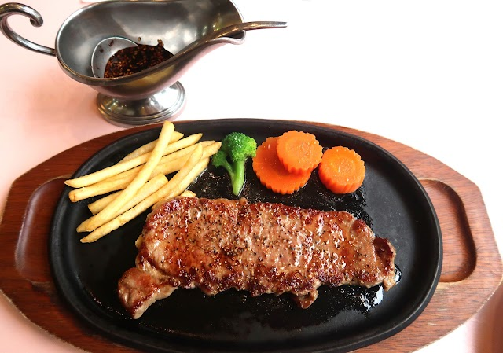
| 営業時間 | 火・水・木・金・土・日 11:00〜20:00 |
|---|---|
| 定休日 | 月曜 |
| 住所 | 岩手県一関市千厩町千厩宮敷４３−８ |
| 予約 | 可 — ☎ 0191-52-2325 ／ 公式サイト |
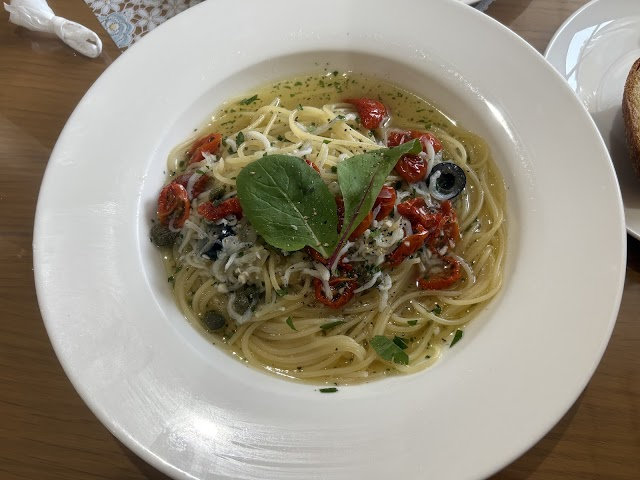
| 営業時間 | 火・水・木・金・土・日 11:30〜14:45, 17:30〜20:00 |
|---|---|
| 定休日 | 月曜 |
| 住所 | 岩手県一関市花泉町涌津二ノ町28−４ |
| 予約 | 可 — ☎ 0191-48-3264 ／ 公式サイト |
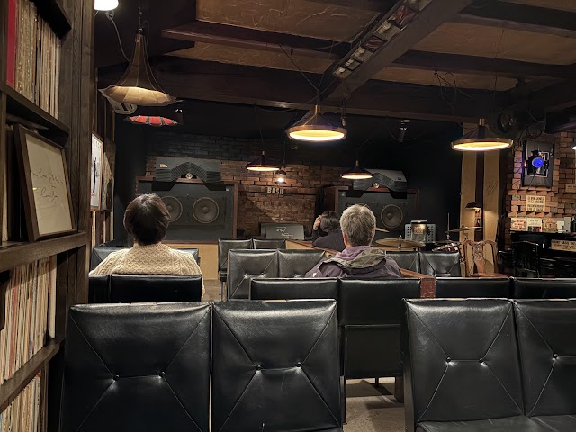
| 営業時間 | 土・日 13:00〜17:00 |
|---|---|
| 定休日 | 月・火・水・木・金曜 |
| 住所 | 岩手県一関市地主町７−１７ |
| 予約 | 要確認 — ☎ 0191-23-7331 ／ 公式サイト |
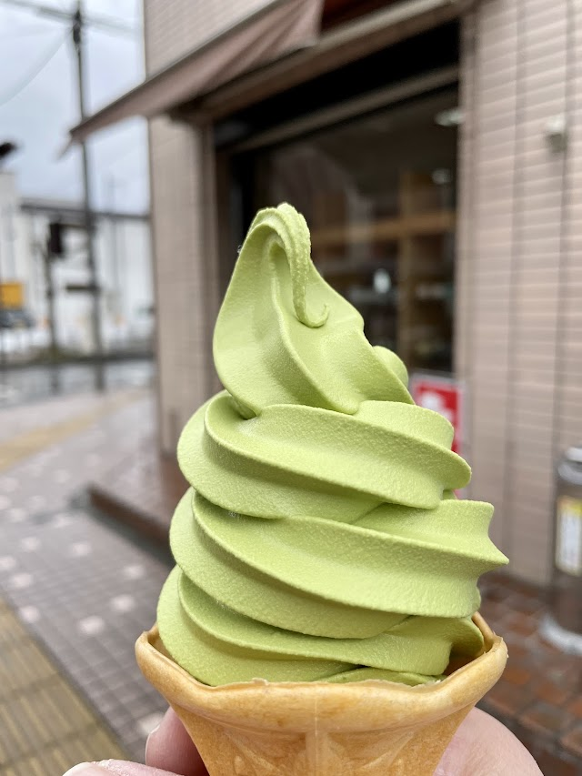
| 営業時間 | 月・火・水・木・金・土 9:30〜18:00 ／ 日 10:00〜17:00 |
|---|---|
| 定休日 | なし(要最終確認) |
| 住所 | 岩手県一関市大町６−１ |
| 予約 | 要確認 — ☎ 0191-23-5152 ／ 公式サイト |
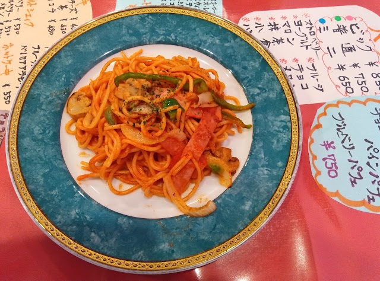
| 営業時間 | 月・火・水・木・金・土・日 10:00〜17:00 |
|---|---|
| 定休日 | なし(要最終確認) |
| 住所 | 岩手県一関市大町４−１１ |
| 予約 | 要確認 — ☎ 0191-23-8601 |
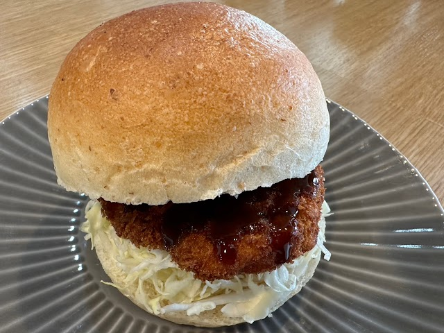
| 営業時間 | 月・火・水・木・金・土・日 10:00〜17:00 |
|---|---|
| 定休日 | なし(要最終確認) |
| 住所 | 岩手県一関市駅前67番 ＪＲ一ノ関駅西口構内 |
| 予約 | 可 — ☎ 0191-34-7670 ／ 公式サイト |
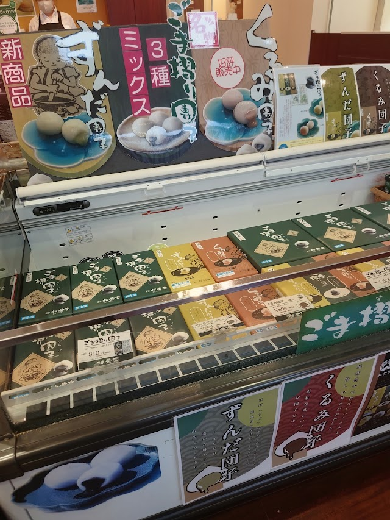
| 営業時間 | 月・火・水・木・金・土・日 10:00〜18:00 |
|---|---|
| 定休日 | なし(要最終確認) |
| 住所 | 岩手県一関市山目中野５８−１ |
| 予約 | 要確認 — ☎ 0191-33-1888 ／ 公式サイト |
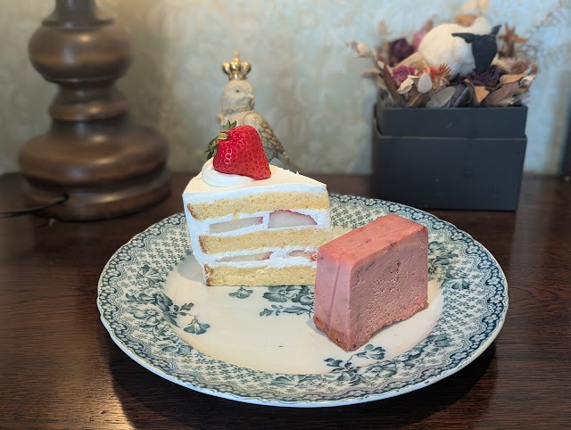
| 営業時間 | 月・火・金・土 13:00〜19:00 ／ 日 12:00〜17:00 |
|---|---|
| 定休日 | 水・木曜 |
| 住所 | 岩手県一関市宮前町１−７ |
| 予約 | 要確認 — ☎ 090-6259-8020 |
本ガイドは個人利用目的で作成。掲載情報は2026年8月時点の調査に基づく。写真出典: Google Maps投稿写真(©各投稿者/Google)。